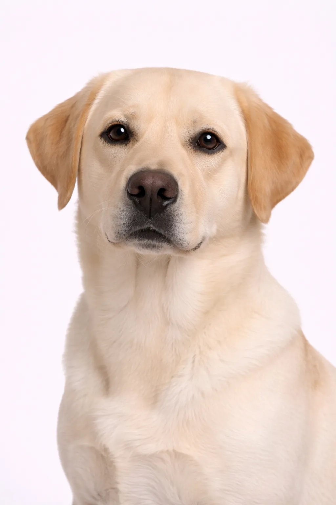

Jakthund
Stor
Labrador Retriever
Världens mest populära hundras — vänlig, intelligent och mångsidig.
Ursprung
Kanada (Newfoundland)
Livslängd
10-12 år
Höjd
55-62 cm
22-24 in
22-24 in
Vikt
25-36 kg
55-79 lbs
55-79 lbs
Rasbetyg
Energinivå5/5
Pälsvård2/5
Träningsbarhet5/5
Barnvänlig5/5
Lägenhetsvänlig2/5
Skällnivå3/5
Temperament
vänligutåtriktadaktivmildintelligent
Översikt
Labrador Retriever är världens mest populära hundras, känd för sitt vänliga temperament, intelligens och mångsidighet.
Temperament
Labrador är känd för att vara vänlig, aktiv och utåtriktad. De är utmärkta familjehundar, tjänstehundar och arbetskamrater.
Hälsa
Benägen för höftledsdysplasi, fetma och ögonproblem. Livslängd 10-12 år. Viktkontroll är viktig.
Motion
Höga motionsbehov med daglig motion och mental stimulans. De älskar att simma och apportera.
⦿ Passar Denna Ras för Dig?
✓ Bäst För
- Familjer med barn
- Aktiva personer
- Förstagångsägare
- Hus med trädgård
- Friluftsälskare
✗ Inte Idealt För
- Stillasittande livsstil
- Ofta borta hemifrån
- Allergiker
- Små lägenheter
Vårt Omdöme: Världens mest populära hundar av goda skäl. Labradors är fantastiska familjehundar men behöver motion och viktkontroll.